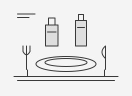

A tortilla, a bag of dried apricots and a pack of bacon keep in different ways. Their ingredient lists offer clues about what helps them last.
SPOT
Find familiar preservative names on a package.
CONNECT
Link an ingredient to the food it helps protect.
DECIDE
Make sense of storage advice and ingredient claims.
Food changes during storage. Molds, yeasts and bacteria can grow, while reactions with oxygen can affect a food’s flavor and color. Preservatives help slow these changes.
Preservative: an ingredient that helps food keep
A food preservative delays spoilage or other unwanted changes during storage. The FDA uses this broad category for both antimicrobial ingredients, which control microorganisms, and antioxidants, which slow oxidation. An ingredient can have several functions in the same food.
This chapter starts with ingredients that control microbes. The bacon example also introduces a companion antioxidant. Chapter 02 will explore antioxidants in more depth.
Antimicrobial preservatives help control microbes, the microscopic organisms that include bacteria, yeasts and molds. Preventing mold growth is one reason to use them in baked foods.
Antimicrobial: acting against microorganisms
Anti- means against; microbial refers to microorganisms. In food preservation, an antimicrobial ingredient inhibits their growth or activity. The organisms it controls depend on the ingredient and the food’s conditions, including acidity and moisture.
Fats can also react with oxygen and develop unpleasant smells or flavors, a change called rancidity. Antioxidants slow the oxidation involved in this change.
Oxidation: a chemical change that can affect food quality
In chemistry, oxidation involves the loss of electrons, tiny particles involved in chemical reactions. In foods, a familiar example is fat reacting with oxygen during storage. The resulting compounds can cause rancid smells and flavors.
Antioxidant: an ingredient that slows oxidation
The name combines anti-, meaning against, with oxidation. Antioxidants help delay changes such as rancidity. The bacon example introduces sodium erythorbate as a companion to nitrite. Chapter 02 will return to antioxidant functions in other foods.
From tortillas to bacon, each food has a different problem to solve. Meet eight preservatives, see them on real ingredient lists and learn what each one contributes.
A soft tortilla needs to stay usable while it is transported, sold and stored. Calcium propionate is an antimicrobial preservative used in baked goods to help slow microbial spoilage, including mold. On this package it shares the phrase “to maintain freshness” with sorbic acid.
It belongs to the propionic acid family. The name tells you which salt is present: calcium propionate contains calcium ions and propionate ions. You may also meet sodium propionate, another salt of the same acid.
Salt: more than the table salt in your kitchen
In chemistry, a salt is a compound made of positive and negative ions, or charged particles. Table salt is sodium chloride. Calcium propionate is a different salt with a different use; the complete name tells you which substance the recipe contains.
02Sorbic acid
Helps inhibit molds and yeasts
Sorbic acid helps control molds and yeasts in a range of foods. The tortilla recipe pairs it with calcium propionate. A food’s preservation system can combine ingredients with processing, packaging and storage conditions.
The related names sorbic acid and sorbate are worth remembering together. Sorbates are salts of sorbic acid. Later on this page, the apricot bag uses potassium sorbate, giving you a second way to recognize this family.
Acid / salt pairs: a connection between labels
Propionic acid / propionate and sorbic acid / sorbate are two specific pairs. Learning these relationships helps you recognize related ingredients even when their complete names differ.
Sprite lists sodium benzoate with the explanation “to protect taste.” Its preservative role is to inhibit microorganisms that could spoil the drink. Benzoates are particularly useful against yeasts in acidic foods.
The food matters here. Acidity helps determine how a preservative works, so an ingredient used in a soft drink may suit a different setting from one used in bread. The product’s purpose statement connects this chemical name to the drink you recognize.
Benzoic acid / benzoate: another acid and its salts
Sodium benzoate contains sodium ions and benzoate ions. Compare it with sodium chloride, the chemical name for table salt. They share the word sodium; the second part identifies a different chemical component. Use both words when identifying an ingredient.
Drying changes how fruit keeps, and the recipe can include preservatives too. Sulfur dioxide is used to help limit browning and microbial spoilage in dried fruit. Here it appears alongside two other preservatives.
Its name describes its composition: one sulfur atom and two oxygen atoms, written SO2. In food it can supply sulfites, so it belongs with the sulfiting agents you may need to recognize on ingredient lists.
Sulfiting agents: related ingredients to recognize
Sulfur dioxide and sodium bisulfite can supply sulfites in food. Other examples include sodium sulfite and potassium metabisulfite. Recognizing this group matters for people with sulfite sensitivity.
05Sodium bisulfite
A sulfiting agent with antioxidant and antimicrobial uses
Sodium bisulfite is another way to supply sulfites in a food. Together with sulfur dioxide, it helps explain why a short fruit ingredient list can contain several chemical names serving preservation purposes.
It is also called sodium hydrogen sulfite. These two names identify the same compound. Potassium sorbate, the next ingredient on this bag, belongs to a different chemical family.
Sulfite / sulfate: one letter, a different group
A sulfite ion contains sulfur and three oxygen atoms, SO32−; a sulfate ion has four oxygen atoms, SO42−. Calcium sulfate, for example, is a sulfate. Read the ending carefully when using information about sulfites.
06Potassium sorbate
Helps control molds and yeasts
This bag lists potassium sorbate as a preservative. It is the potassium salt of sorbic acid, the ingredient you met with the tortillas. That relationship connects two foods with quite different packaging.
Potassium sorbate dissolves readily in water, which helps it spread through a recipe. It is used in foods such as fruit products, sauces and other foods where molds and yeasts need to be controlled. Its effectiveness also depends on conditions in the food, including acidity.
Potassium sorbate / sorbic acid: keep the relationship in view
They belong to the same preservative family. One is an acid; the other is a potassium salt of that acid. The shared family explains the similar names and their mold- and yeast-control roles.
In cured bacon, sodium nitrite helps develop the familiar cured color and flavor. It also helps control the hazard from the bacterium that causes botulism, a serious foodborne illness. One ingredient can contribute to several features of the food.
This is the nitrite family, which you can distinguish from the sulfites on the apricot bag. The complete ingredient name is the starting point for finding the right information about its use.
Nitrite / nitrate: related, with different formulas
Nitrite, NO2−, has two oxygen atoms; nitrate, NO3−, has three. In some meat-curing processes, bacteria convert nitrate to nitrite. This product directly lists sodium nitrite.
08Sodium erythorbate
An antioxidant that also helps the curing process
Sodium erythorbate is a salt of erythorbic acid. In bacon it helps speed the reaction of nitrite with the meat and reduces the amount of nitrite available to form nitrosamines.
This gives you a useful comparison with the tortilla preservatives. Calcium propionate helps control microbes; erythorbate has an antioxidant and curing role. Both sit within the FDA’s broad preservative category, with different jobs in their recipes.
Nitrosamines: why the companion ingredient matters
Nitrosamines are unwanted compounds that can form when nitrite reacts with compounds called amines during processing or cooking. Erythorbate helps reduce their formation in bacon. The two ingredients listed together have complementary roles.
The FDA’s examples also include calcium sorbate, ascorbic acid, tocopherols (vitamin E), BHA and BHT. Some ingredients serve several purposes, so their role is best understood alongside the food and its recipe. The next chapter takes a closer look at antioxidants.
Here’s a squeeze bottle of Heinz Sweet Relish. Find the preservatives in its ingredient list, then select each name to connect it with what you’ve learned.
You met potassium sorbate on the dried-apricot bag. The same complete name appears here in a different recipe. Its mold- and yeast-control role fits the preservative purpose printed on this bottle.
The benzoate family
Sodium benzoate
You met sodium benzoate with Sprite. Here, the manufacturer places it next to potassium sorbate and names their shared preservative purpose. It is a benzoate, while potassium sorbate is a sorbate.
The label’s own explanation
As preservatives
The parentheses follow both ingredient names. They tell you why this pair is included. This is a useful way to connect a technical name with its job in a particular food.
Read the complete ingredient list
Cucumbers, High Fructose Corn Syrup, Cabbage, Distilled White Vinegar, Salt, Potassium Sorbate and Sodium Benzoate (as Preservatives), Guar Gum, Aluminum Sulfate, Xanthan Gum, Dried Red Bell Peppers, Polysorbate 80, Natural and Artificial Flavors (including Celery), FD&C Yellow No. 5 and FD&C Blue No. 1.
Read each complete name. Potassium sorbate and sodium benzoate are two different ingredients.
Find the stated purpose. “As preservatives” applies to both.
Connect the families. Sorbate links back to sorbic acid; benzoate links back to benzoic acid.
A dinner experiment from 1902, a change in drink regulations and a dried-fruit recall each tell a different story about food ingredients.

History / 1902The dinner club called the “Poison Squad”
In 1902, chemist Harvey Wiley recruited volunteers to eat meals containing selected chemicals so researchers could study their effects. The group became known as the “Poison Squad.”
Wiley used the experiment to bring public attention to food adulteration, the practice of tampering with food or adding substances deceptively. His campaign helped build support for the 1906 Pure Food and Drugs Act.
Rules that changed / 2024The drink additive that lost its authorization
Brominated vegetable oil, or BVO, was used in some drinks to keep citrus flavoring from separating. The FDA revoked the regulation allowing its use in food in July 2024 after new evidence raised safety concerns.
The rule took effect on August 2, 2024. Companies had until August 2, 2025 to reformulate, update labels and use up existing stock.
Names and safetyWhat goes into a safety assessment?
Ingredients from natural and artificial sources must meet the same FDA safety standard. Evaluations consider the specific substance, its intended use and people’s likely exposure, meaning how much they may consume.
When you read a claim about an additive, look for the food, amount and people it concerns. Those details help you judge whether the evidence applies.
From the news / June 2025The ingredient that was missing from the label
Turkana Food recalled a batch of Floria dried apricots because the label omitted sulfites. State inspectors found them during routine sampling. People with sulfite sensitivity could have a serious reaction to the product.
The June 12, 2025 notice identified undeclared sulfites as the reason for the recall and reported no confirmed illnesses at that time.
Nitrite helps preserve cured meat. Unusually high exposure can impair the blood’s ability to carry oxygen, a condition called methemoglobinemia. The amount consumed is part of evaluating its safety.
Individual sensitivity matters as well. Sulfites can trigger reactions in sensitive people, which is one reason they have specific labeling requirements.
Connect the ingredients with their uses, compare two related names, and interpret a statement from a real label. Try each task, then check the explanation.
Try a different food
New food challenge
You’re reading a jar of Smucker’s Sugar Free Strawberry Preserves. Read its ingredient list, then explain the role of potassium sorbate and connect it with an earlier ingredient.
Take a closer look at the jar. You can enlarge the package or read its ingredient list below.
Read the ingredient list as text
Water*, Strawberries+, Polydextrose*, Maltodextrin*, Contains 2% Or Less Of: Fruit Pectin, Citric Acid, Locust Bean Gum*, Vegetable Juice (For Color)*, Natural Flavors*, Potassium Sorbate (Preservative), Calcium Chloride*, Sucralose (Non Nutritive Sweetener)*.
*Ingredients not in regular preserves. +Adds a trivial amount of sugar, <0.5g/serving.
Chapter check
Try what you’ve learned
Answer six questions in four minutes about ingredient functions, related names, storage and label claims. Lesson notes are unavailable during the check. Afterward, you can review your answers and reopen the notes.